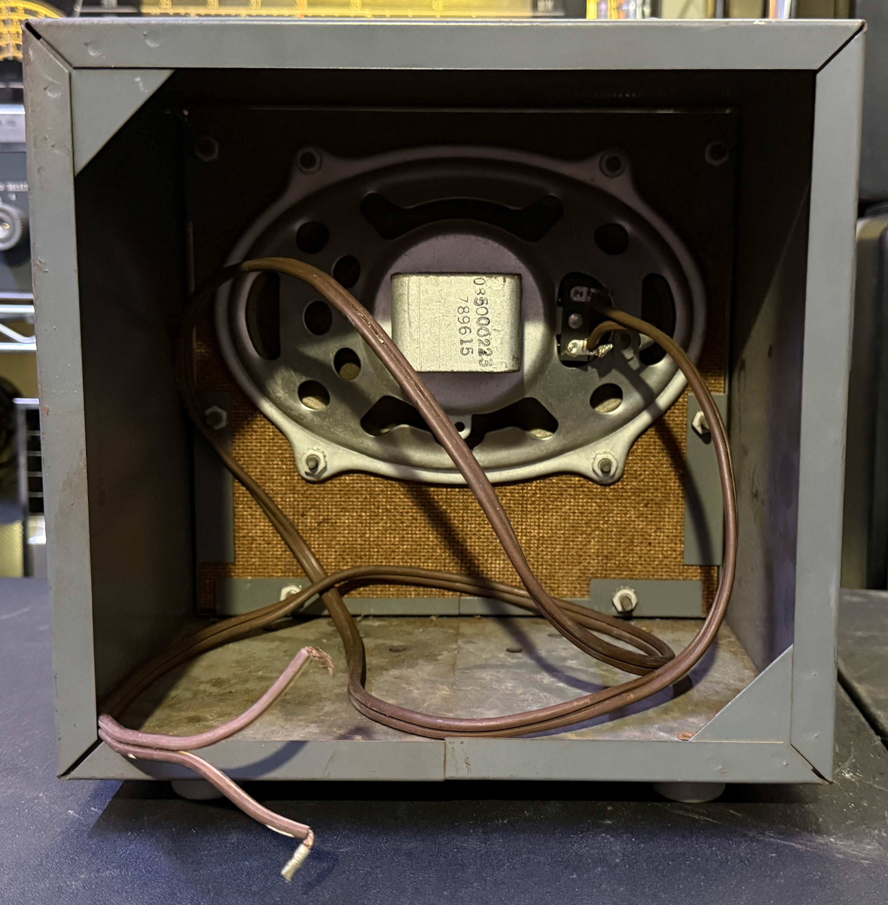

Hallicrafters R-50 Speaker
Years of Production: 1950s
The Hallicrafters R-50 is a vintage external communications speaker designed to complement Hallicrafters receivers, particularly models from the 1950s such as the S-38, S-85, and others.
Technical Specifications
- Speaker Size: 8 inches (dynamic)
- Impedance: 3.2 ohms
- Power Handling: Approximately 5 watts
- Cabinet: Metal enclosure with perforated grille
- Dimensions: Approx. 9" W x 8" H x 6" D
- Finish: Typically black wrinkle or gray paint
- Input: Screw terminals on rear panel
Notable Features
- Designed to match the styling of Hallicrafters receivers
- Robust metal construction for durability
- Good audio fidelity for voice and CW reception
- Simple, reliable design with minimal circuitry
Historical Context
The R-50 speaker was introduced during the post-war boom in amateur radio, when Hallicrafters was a leading manufacturer of radio equipment. It provided improved audio quality over built-in receiver speakers and was often sold as an accessory. Today, the R-50 is sought after by collectors and restorers for its period-correct appearance and performance.
N4IXTs Hallicrafters R-50 Speaker Other Images
R-50 Speaker Rear View

R-50 Speaker Side View

R-50 Speaker Vertical View